User Panel Activity
UMLActivity
Documentation
::
System Activities
::
User Panel Activity
Description
none
Diagrams

User Panel Activity
Groups
UI
Controller
REST API
FILE SYSTEM
Nodes
File System
InitialNode1
get
Action1
Copy
Move
Delete
ForkNode2
Action2
JoinNode1
Download
Fetch Entry
post
ForkNode1
Upload File
Create New Directory
Logout
MergeNode1
Close
MergeNode3
DecisionNode1
Edges
FS Raw Entries (File System→get)
fetch entries (get→File System)
get entries (Fetch FS Entries→get)
structured fs entries (→)
raw fs entries (File System→get)
fetch existing (ForkNode1→Fetch FS Entries)
display (Fetch FS Entries→Display FS Entries and Respective Actions)
Respective Actions (Display FS Entries and Respective Actions→ForkNode1)
(ForkNode1→Download)
Delete (ForkNode1→Delete Entry)
(ForkNode1→Copy)
(ForkNode1→Move)
(ForkNode2→ForkNode2)
(Intperpret Action→DecisionNode1)
get file entry (DecisionNode1→get)
file (→)
(JoinNode1→Intperpret Action)
Move (ForkNode1→Move Entry)
Copy (ForkNode1→Copy Entry)
Download (ForkNode1→Fetch Entry)
file (→)
(Copy Entry→put)
(Move Entry→put)
(Delete Entry→delete)
create file or directory (post→File System)
copy or rename file (put→File System)
delete file or directory (delete→File System)
(InitialNode1→ForkNode1)
Other Actions (ForkNode1→ForkNode3)
(ForkNode3→Upload File)
(ForkNode3→Create New Directory)
(ForkNode3→Logout)
(Upload File→Create or Upload Entry)
(Create or Upload Entry→DecisionNode1)
(Close→End Session)
(Logout→MergeNode2)
(Clear Credentials→MergeNode2)
(End Session→MergeNode2)
(Logout→Clear Credentials)
(Clear Credentials→End Session)
(MergeNode2→ActivityFinalNode1)
(Logout→ForkNode3)
(ForkNode3→Clear Credentials)
(ForkNode3→End Session)
(Create New Directory→Create or Upload Entry)
enough space (DecisionNode1→post)
Properties
Name
Value
name
User Panel Activity
stereotype
null
visibility
public
isReentrant
true
isReadOnly
false
isSingleExecution
false
Owned Elements
User Panel Activity